There are Italian hill towns that are beautiful from a distance, and then there is Spoleto — a town that seems to reveal something extraordinary around almost every corner.
A vast medieval fortress dominates the skyline. An enormous stone bridge strides across a wooded gorge. Roman arches appear between medieval houses, and a cathedral at the bottom of a magnificent flight of steps contains one of the great masterpieces of Renaissance painting.
Yet Spoleto, in southern Umbria, is surprisingly easy to overlook. Visitors heading north from Rome often continue towards Assisi, Perugia or Florence, missing a town that has played a remarkable role in Italian history for more than two thousand years.
Spoleto was a Roman municipality, the capital of an important Lombard duchy and later a stronghold of papal power. Today it is internationally recognised for the Festival dei Due Mondi, which transforms its piazzas, churches and theatres into performance spaces every summer.
And the good news? You can reach Spoleto by direct train from Rome in around 1 hour 20 minutes on the faster services, making it an excellent day trip without a car. But allow a full day. Spoleto has far more to offer than its size might suggest.
Begin in Piazza del Mercato: Spoleto's Ancient Heart
The pleasure of Spoleto is discovering how its different periods of history overlap.
Start in Piazza del Mercato, a lively little square surrounded by cafés, restaurants and old buildings. It's the sort of place where residents stop for coffee, friends gather at outdoor tables and visitors quickly settle into the rhythm of the town. But this was once the site of the Roman Forum.
Look carefully at the surrounding streets and you'll find traces of ancient Spoletium, the Roman settlement that developed here after the third century BC. A few steps away stands the Arco di Druso e Germanico, a monumental Roman arch built in AD 23 in honour of members of the imperial family. Its survival among the surrounding medieval buildings is a wonderful example of how Spoleto has grown around its ancient foundations rather than replacing them.
From here, follow the narrow lanes uphill towards the cathedral, passing stone palaces, small churches and unexpected glimpses across the Umbrian countryside.
Piazza del Duomo: One of Italy's Most Beautiful Cathedral Squares
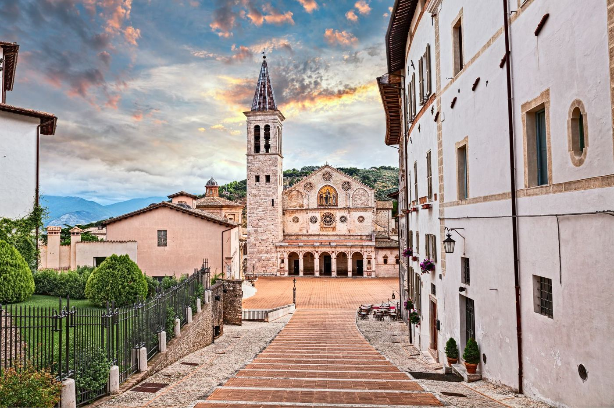
Few Italian towns can rival the approach to Spoleto's cathedral. Rather than standing on a conventional square, the Duomo appears at the bottom of a broad descending staircase. As you walk down, its Romanesque façade gradually comes into view, framed by historic buildings and the surrounding hillside.
The effect is theatrical, which makes it particularly appropriate that this square becomes one of the principal stages for Spoleto's summer arts festival.
The cathedral, dedicated to Santa Maria Assunta, dates largely from the 12th century, although it has been altered and embellished over subsequent centuries. Look up at the extraordinary rose window and the golden mosaic of Christ between the Virgin Mary and St John, completed in 1207.
But the real treasure lies inside.
Filippo Lippi's Last Masterpiece
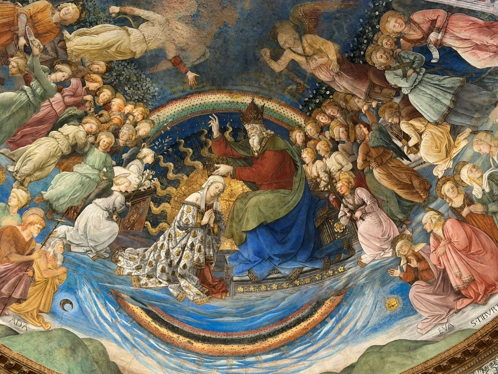
The cathedral's greatest artistic attraction is the magnificent cycle of frescoes painted by Florentine Renaissance master Filippo Lippi in the apse. Commissioned in the 1460s, the paintings depict scenes from the life of the Virgin Mary, culminating in the spectacular Coronation of the Virgin.
Lippi was already one of Florence's most accomplished painters when he arrived in Spoleto. His delicate figures, expressive faces and elegant compositions had helped shape the development of Renaissance painting.
The frescoes are particularly remarkable for their sense of movement and human emotion. Rather than presenting remote religious figures, Lippi gives his subjects warmth, individuality and an almost theatrical presence. The Coronation of the Virgin fills the upper apse with a sweeping assembly of angels and saints, its rich colours and graceful figures creating one of the most memorable interiors in Umbria.
Lippi died in Spoleto in 1469, before the work was fully completed, and was buried in the cathedral. His tomb, commissioned by Lorenzo de' Medici and designed by Filippino Lippi, remains here.
It's worth spending time in front of the frescoes rather than treating the cathedral as another quick stop.
Also look for the cathedral's painted crucifix by Alberto Sotio, dated 1187, an important surviving work of medieval Italian art.
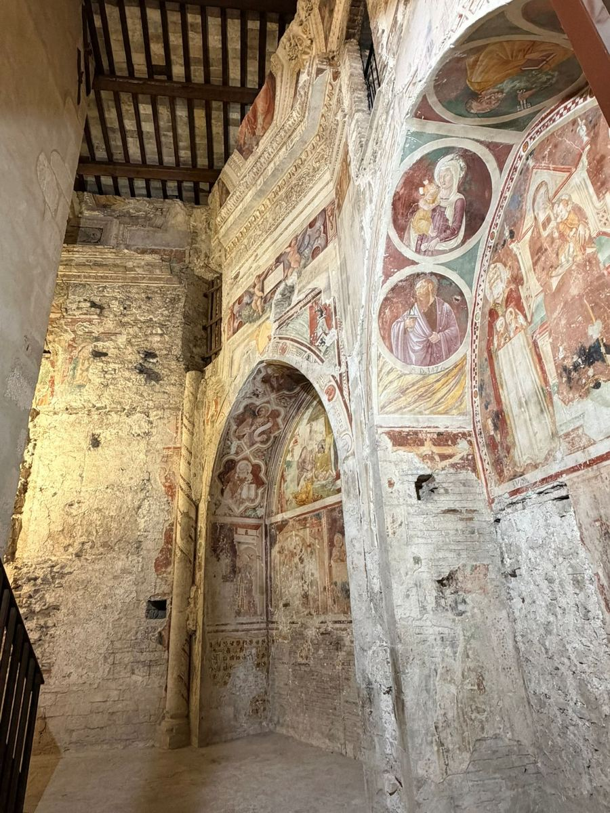
Climb to the Rocca Albornoziana: Fortress of Popes and Dukes
Above the cathedral rises the immense Rocca Albornoziana, one of central Italy's most impressive medieval fortresses. Construction began in 1359 under Cardinal Egidio Albornoz, who was charged with restoring papal authority across central Italy. The fortress was designed to dominate both the town and the surrounding valley, with six towers, enormous defensive walls and commanding views towards the mountains.
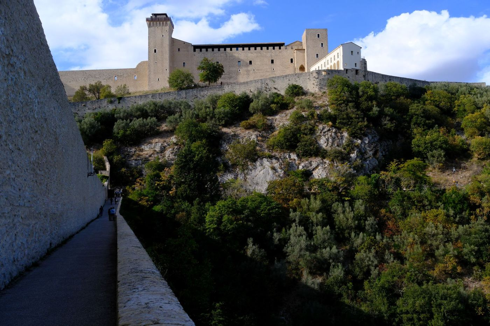
Its history is full of intrigue. In 1499, Lucrezia Borgia, daughter of Pope Alexander VI, was appointed governor of Spoleto and spent time at the fortress. Later, the building served as a prison, a role it retained until the 20th century.
Today the Rocca houses the Museo Nazionale del Ducato di Spoleto, with exhibits tracing the town's importance during the early Middle Ages, particularly under Lombard rule. The internal courtyards and surviving painted rooms are worth exploring, but so are the views from the ramparts.
Special visits to the fortress towers and elevated walkways are also offered on selected dates, providing an unusual perspective over the town. Check opening times and tour availability at spoletocultura.it.
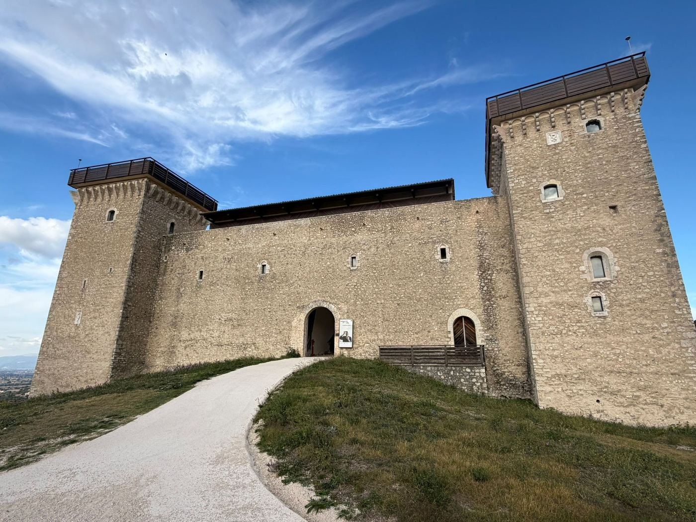
The Ponte delle Torri: Spoleto's Most Extraordinary Landmark
From the fortress, follow the panoramic Giro della Rocca path around the hillside. Then, suddenly, the landscape opens and the Ponte delle Torri comes into view. It is a remarkable sight.
Stretching approximately 230 metres across a deep wooded gorge and rising around 80 metres above the valley floor, the bridge is one of the most extraordinary feats of medieval engineering in Italy. Its nine enormous stone pillars support a series of pointed arches, creating a structure that seems almost impossibly slender when viewed from the surrounding hills.
The bridge also served as an aqueduct, carrying water from the slopes of Monteluco into Spoleto. Its origins are debated, although the structure visible today is generally associated with the 13th and 14th centuries.
For centuries it has fascinated travellers, artists and writers. Goethe admired the bridge during his Italian journey in the 18th century, recognising the extraordinary ambition of its construction.
Following more than eight years of closure for structural repairs, the Ponte delle Torri reopened to pedestrians in December 2024. You can once again walk across to the wooded slopes on the opposite side of the gorge. It's one of the highlights of visiting Spoleto, although anyone uncomfortable with heights may prefer to admire it from the panoramic path.
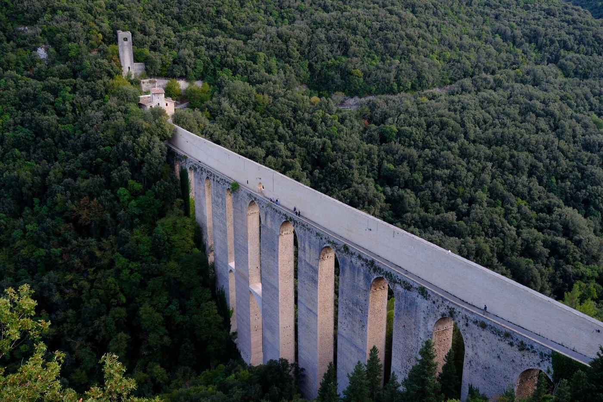
Hidden Gem: Walk Into the Woods of Monteluco
Most visitors photograph the Ponte delle Torri and return to the historic centre. But if you have time, cross the bridge and continue towards Monteluco.
This densely wooded mountain has been associated with religious retreat since ancient times. Early Christian hermits settled here, attracted by the isolation and peaceful forests. Paths lead into woodland filled with holm oaks, and longer walks reach the Franciscan sanctuary and the Bosco Sacro, or Sacred Wood.
For a shorter excursion, follow part of the Giro dei Condotti, a path that provides wonderful views back towards the bridge and Spoleto. It's a lovely contrast to the town's monumental architecture and a reminder that some of Umbria's finest countryside begins almost immediately beyond its historic centres.
Roman Spoleto: A Theatre, an Ancient House and a Hidden Arch
Back in town, there's more Roman history to discover. The Teatro Romano, dating from the first century BC, is one of Spoleto's most important ancient monuments. Today its surviving semicircular seating provides a striking setting for cultural performances, particularly during the summer festival. The adjoining archaeological museum, housed in the former monastery of Sant'Agata, contains finds from the Roman town and surrounding territory.
Another fascinating stop is the Casa Romana, a remarkably preserved Roman house discovered beneath the modern streets. Its surviving mosaic floors and domestic rooms offer a glimpse of wealthy life in ancient Spoletium. The house is sometimes associated with Vespasia Polla, mother of Emperor Vespasian, although that identification remains uncertain.
Together with the Arco di Druso, these sites reveal just how substantial the Roman settlement once was.
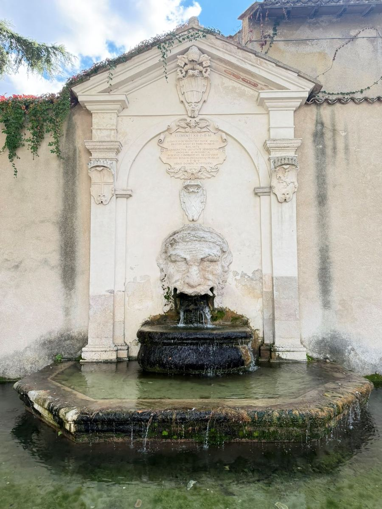
Another Hidden Gem: San Salvatore, a UNESCO Treasure
Just outside the main historic centre stands one of Spoleto's most important buildings, yet many visitors miss it entirely. The Basilica di San Salvatore is part of the UNESCO World Heritage listing Longobards in Italy: Places of Power.
Its architecture reflects the extraordinary cultural exchange that took place during the early Middle Ages, combining classical Roman influences with the developing artistic traditions of Lombard Italy. The church is particularly significant for its unusual proportions, columns and decorative details. It is one of the most important surviving examples of early medieval religious architecture in Italy.
Access to the interior has been restricted during conservation works, so check current arrangements before making a special journey. Even from outside, however, it is an important reminder of Spoleto's status as the capital of a powerful Lombard duchy.
Where to Eat in Spoleto
Food is another excellent reason to spend time in this part of Umbria. Spoleto sits in a region known for olive oil, truffles, cured meats, lentils, wild mushrooms and robust local wines.
One of the dishes to look for is strangozzi, a traditional Umbrian pasta made without eggs and often served with a simple tomato sauce, black truffles or local mushrooms.
- Al Bacco Felice — worth considering for its informal Italian cooking and welcoming atmosphere. It's the kind of place to stop for a leisurely lunch on your way to the cathedral.
- La Bottega di Spoleto, Via Palazzo dei Duchi — a small food shop celebrating Umbrian producers, with cured meats, cheeses, wines, olive oils and truffle products. Particularly good for assembling a picnic or taking something home. @labottegadispoleto
- Il Tempio del Gusto — for a more contemporary dining experience, one of Spoleto's best-known restaurants. Located near the Roman Arch, it offers carefully presented Italian cooking with a creative approach to local ingredients. Its intimate dining rooms make it particularly appealing for an evening meal if you're staying overnight. @iltempiodelgusto__
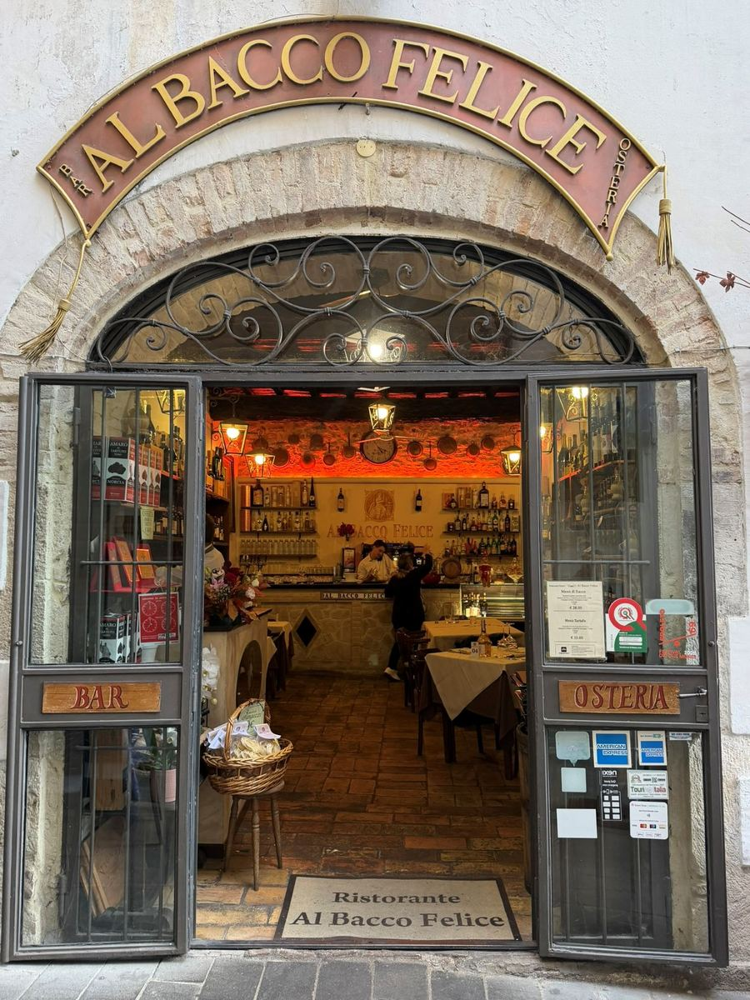
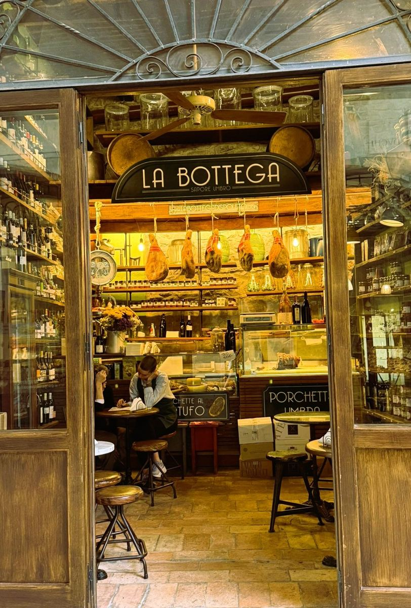
Spoleto also has plenty of small cafés and wine bars around Piazza del Mercato and the streets leading towards the cathedral. If you're visiting during autumn, look for dishes featuring fresh black truffles and the region's new-season olive oil.
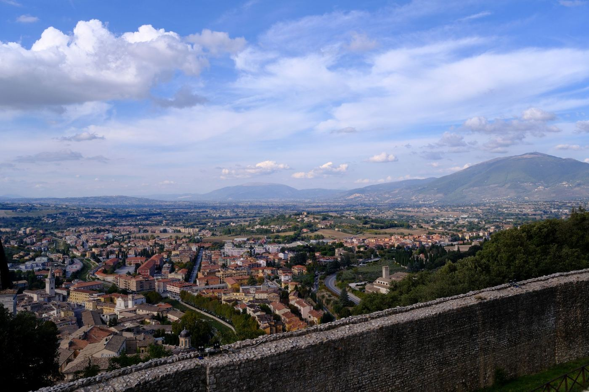
Festival dei Due Mondi: When Spoleto Becomes an International Stage
Every summer, Spoleto undergoes a remarkable transformation. The Festival dei Due Mondi, or Festival of Two Worlds, was founded in 1958 by Italian-American composer Gian Carlo Menotti. His ambition was to create a meeting place between European and American artistic traditions, bringing together opera, music, dance, theatre and visual arts.
Over the decades, the festival has attracted internationally renowned performers, directors and artists, helping establish Spoleto as one of Italy's most important cultural destinations. Performances take place in theatres, churches, historic buildings and outdoor spaces throughout the town. Piazza del Duomo becomes an especially spectacular setting for concerts, with the cathedral façade providing a magnificent backdrop.
The 70th edition is scheduled for 25 June to 11 July 2027, making it a particularly exciting year to visit. If you're planning to attend, book accommodation well in advance — the town becomes considerably busier during the festival. Programme and tickets: festivaldispoleto.com.
Spoleto also hosts cultural exhibitions, concerts and smaller events throughout the year, so it's worth checking the local programme before travelling.
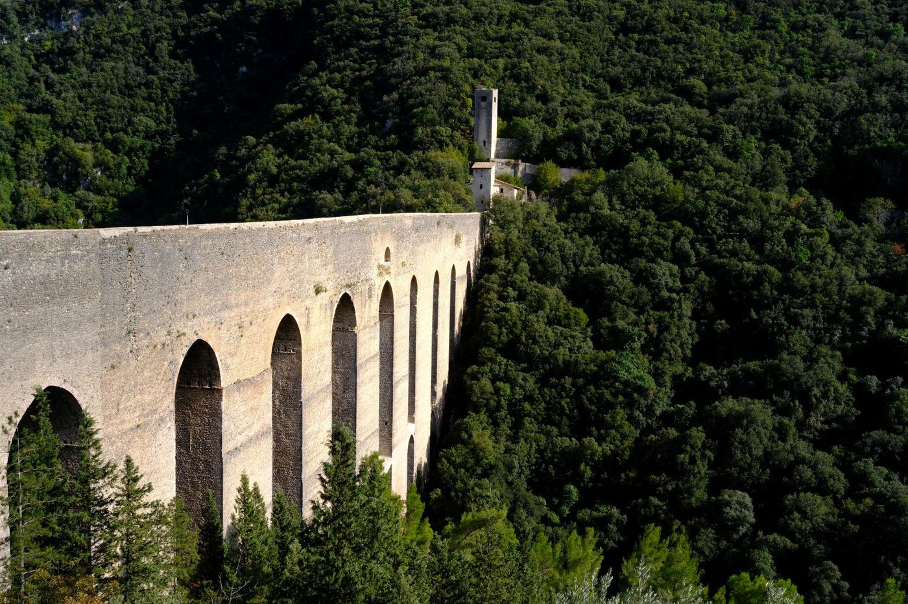
How to Get to Spoleto
By Train from Castiglion Fiorentino
One of Spoleto's great advantages is how easily it fits into a car-free itinerary through central Italy. There is a morning train from Castiglion Fiorentino (free parking, and a 10-minute drive from the house) that will get you into Spoleto in time for coffee. The journey is under 2 hours and offers some stunning scenery along the way for a relaxing car-free day trip. For train schedules and tickets, see trenitalia.com.
Arriving at Spoleto Station
Spoleto railway station is in the lower part of town, around 20–25 minutes' walk from the historic centre. The walk is uphill, so it's worth taking advantage of Spoleto's excellent system of public escalators and moving walkways, known locally as the metropolitana pedonale. These connect different levels of the historic centre and make exploring the steep hillside much easier.
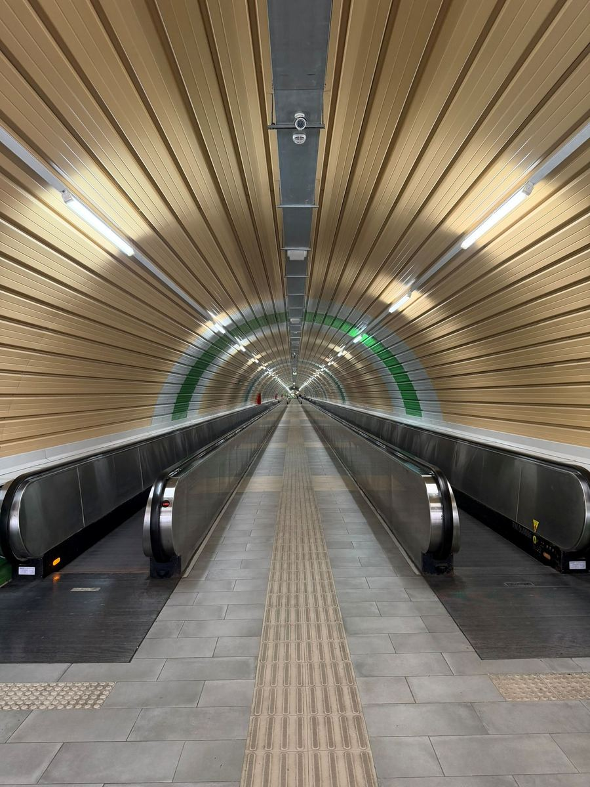
By Car
Alternatively, if you want to drive, we recommend Parcheggio della Posterna, which is at the base of the elevator and very convenient. Spoleto is around 1.5 hours by car from the house, making an easy day trip or overnight stay.
Spoleto at a Glance
- By trainUnder 2 hours from Castiglion Fiorentino, 10 minutes' drive from the house
- By carAround 1.5 hours; park at Parcheggio della Posterna
- Getting aroundEscalators and moving walkways link the lower and upper town
- Don't missLippi's frescoes in the Duomo, the Rocca and the Ponte delle Torri
- FestivalFestival dei Due Mondi, 25 June – 11 July 2027
- WearComfortable shoes — steep lanes, steps and cobbles
A Whole String of Umbrian Towns by Train
Spoleto is particularly appealing because it doesn't have to be an isolated excursion. The railway corridor through the Valle Umbra connects a wonderful collection of historic towns, making it possible to create a longer journey without hiring a car.
- Trevi — travelling north from Spoleto, the first stop worth considering is a beautiful hill town surrounded by olive groves. The railway station is below the historic centre, so allow time for the uphill transfer.
- Foligno — often overlooked in favour of its hilltop neighbours. Unlike many Umbrian towns, its historic centre is relatively flat, with handsome piazzas, churches, cafés and an excellent local food scene.
- Spello — one of Umbria's prettiest small towns, famous for its flower-filled streets, Roman gates and Renaissance frescoes by Pinturicchio in the Baglioni Chapel.
- Assisi — where the Basilica of San Francesco contains some of the most important medieval frescoes in Italy. The station is down in Santa Maria degli Angeli, with buses connecting to the hilltop historic centre.
- Perugia — Umbria's lively regional capital, where Etruscan walls, medieval streets, Renaissance art and a thriving university culture make it well worth a couple of nights.
The beauty of this route is that each town offers something different. Spoleto has its fortress and monumental bridge. Trevi its olive-growing traditions. Foligno its understated urban character. Spello its intimate medieval streets. Assisi its extraordinary religious art. And Perugia its grand historic centre and lively cultural scene.
You could easily spend four or five days travelling between them, staying in two or three bases and making short excursions by train. Just remember that some hill towns require a bus, taxi or uphill walk from their railway stations, and not every service runs through the entire route without a change.
When Is the Best Time to Visit Spoleto?
Spring is one of the loveliest seasons, when the surrounding countryside is green, temperatures are comfortable and the town is ideal for walking. Late June and early July bring the Festival dei Due Mondi, when Spoleto is at its most lively and international. September and October are equally appealing, with warm days, quieter streets and the beginning of the autumn food season. Winter can be atmospheric too, particularly on clear days when the mountains beyond the town are dusted with snow.
Whatever the season, comfortable shoes are essential. Spoleto's historic centre is steep, with steps, cobbled lanes and several levels to explore.
Why Spoleto Deserves a Place on Your Italian Itinerary
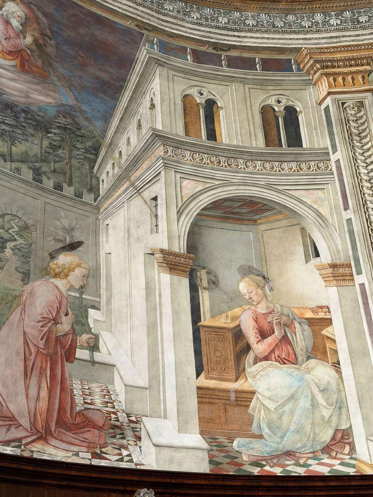
Spoleto has all the ingredients of a great Italian destination, yet somehow remains less internationally famous than many smaller towns. Its history stretches from ancient Rome through the Lombard duchy and the medieval papacy to the Renaissance and the modern performing arts.
Its cathedral contains a masterpiece by Filippo Lippi. Its fortress recalls centuries of political intrigue. Its monumental bridge is one of the most extraordinary sights in Umbria. And between the major monuments are beautiful little squares, atmospheric lanes, excellent Umbrian food and views across some of central Italy's loveliest countryside.
Best of all, you can experience it independently, arriving by train and exploring on foot. Come for the day, stay overnight during the festival, or make Spoleto the first stop on a longer journey through the towns of the Valle Umbra.
However you visit, it's a town that deserves far more attention than it receives.
Explore More of Italy by Train
Spoleto is just one of the many rewarding destinations you can discover independently by rail. Our best-selling Touring Italy by Train guide brings together practical itineraries, scenic journeys, cultural highlights and local recommendations to help you explore Italy beyond the obvious destinations. From Rome and Florence to the smaller towns of Tuscany and Umbria, the guide makes it easy to plan your own journey without a car.
Because some of Italy's most memorable places are only a short train journey away.